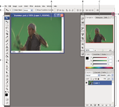

Workspace overview
 You can restore the default
workspace at any time by choosing the default option on the Window >
Workspace menu.
You can restore the default
workspace at any time by choosing the default option on the Window >
Workspace menu.-
The menu bar across the top organizes commands under menus.
-
The Tools panel (called the Tools palette in Photoshop) contains tools for creating and editing images, artwork, page elements, and so on. Related tools are grouped together.
-
The Control panel (called the options bar in Photoshop) displays options for the currently selected tool. (Flash has no Control panel.)
-
The Document window (called the Stage in Flash) displays the file you’re working on.
-
Panels (called palettes in Photoshop) help you monitor and modify your work. Examples include the Timeline in Flash and the Layers palette in Photoshop. Certain panels are displayed by default, but you can add any panel by selecting it from the Window menu. Many panels have menus with panel-specific options. Panels can be grouped, stacked, or docked.

- A.
- Document window
- B.
- Dock of panels collapsed to icons
- C.
- Panel title bar
- D.
- Menu bar
- E.
- Options bar
- F.
- Tools palette
- G.
- Collapse To Icons button
- H.
- Three palette (panel) groups in vertical dock
For a video on understanding the workspace, see www.adobe.com/go/vid0187.
 Hide or show all panels
Hide or show all panels
- (Illustrator, InCopy, InDesign, Photoshop) To hide or
show all panels except the Tools panel and options bar or Control
panel, press Shift+Tab.
You can temporarily display panels hidden
by these techniques by moving the pointer to the edge of the application
window (Windows) or to the edge of the monitor (Mac OS)
and hovering over the strip that appears.
Display panel menu options
 Position
the pointer on the panel menu icon in
the upper-right corner of the panel, and press the mouse button.
Position
the pointer on the panel menu icon in
the upper-right corner of the panel, and press the mouse button.(Illustrator) Adjust panel brightness
In User Interface preferences, move
the Brightness slider. This control affects all panels, including
the Control panel.